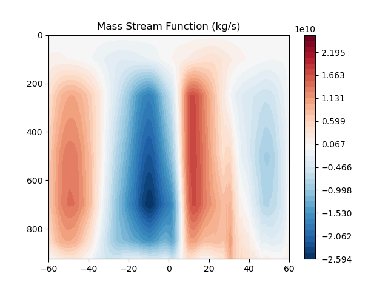
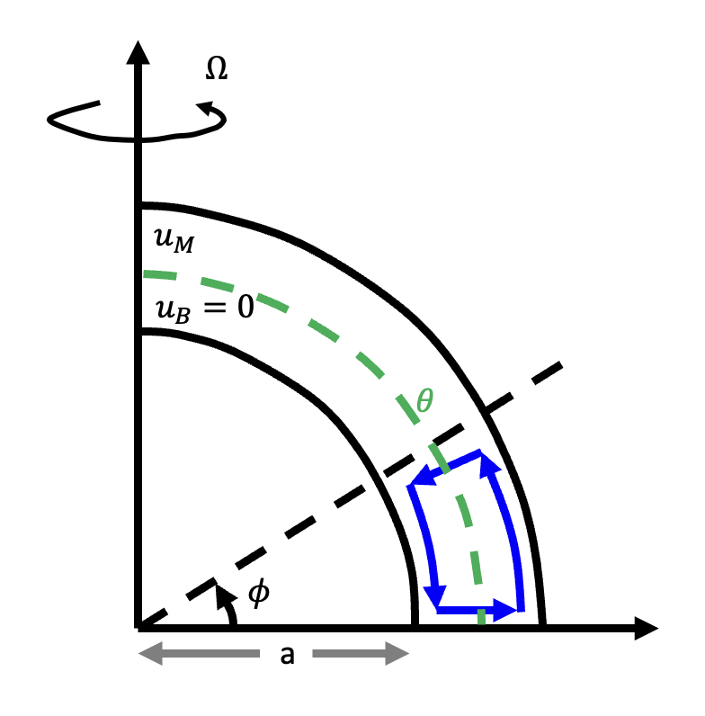
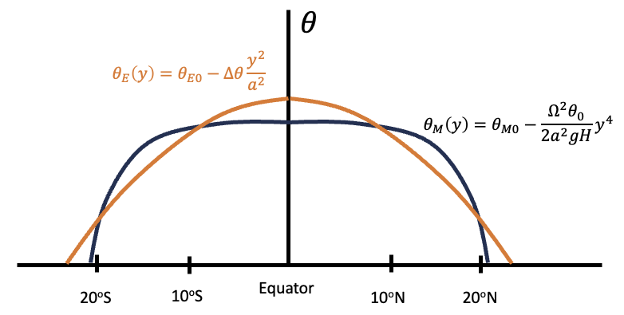
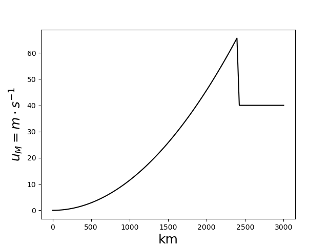
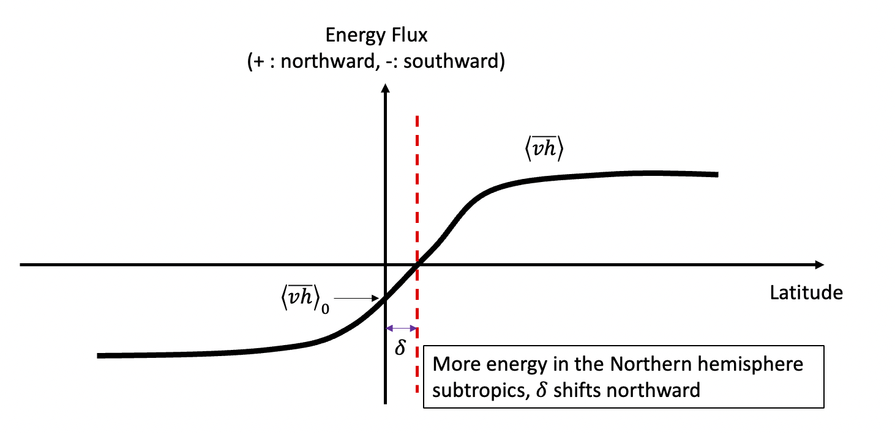
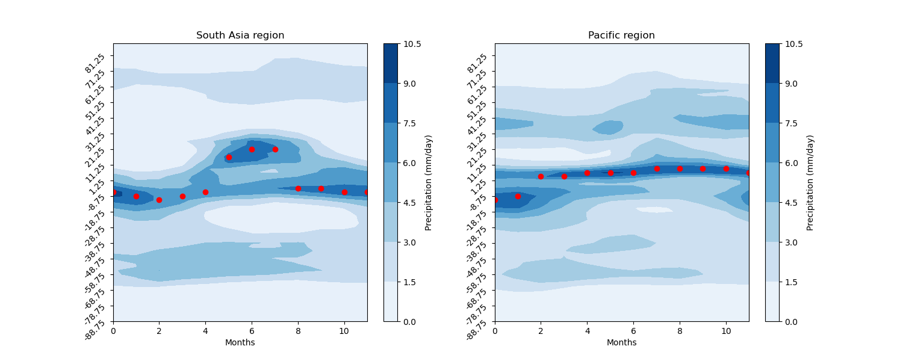

Week 4 and 5: Hadley Cell#
Held-Hou Model#
Building on the discussions from the past two weeks, this week we will explore how energy is redistributed from the tropics to other latitudes. Early studies on general circulation were inspired by observations made by Halley (1686) and Hadley (1735). They concluded that the tropical trade winds are part of a large-scale circulation that redistributes solar energy across latitudes. Impressively, even without upper-troposphere observations available at that time, they predicted the existence of westerly winds in the upper troposphere.
The zonally averaged Hadley circulation is depicted in Fig. 9 (mass stream function). The Hadley cell serves two main purposes: (1) redistributing meridional potential energy, and (2) conserving angular momentum. We’ll delve into these shortly. Several interesting features shown in Fig. 9 lead to notable conclusions. First, the maximum ascending motion is centered around \(5^o\)N, suggesting an imbalance in incoming energy between the hemispheres. Consequently, the Hadley cell transports energy from one hemisphere to the other. Second, the descending branch is located around 30\(^o\)N, which is relatively asymmetric between the hemispheres. (Indeed, if Fig. 1 were flipped about the equator, we would observe nearly identical incoming shortwave radiation in both hemispheres.) This suggests a fairly symmetric energy balance within this region.

Fig. 9 The long-term averaged mass stream function.#
To model how energy and angular momentum are redistributed via the Hadley cell, several studies have been conducted, dating back to the 1980s. Held and Hou (1980) were pioneers in this area, and their model is summarized in Fig. 10.

Fig. 10 Held and Hou (1980) Hadley Cell model#
The Held and Hou model is a two-layer representation of the observed Hadley cell circulation, featuring poleward flow in the upper layer, which transports higher potential energy to other latitudes, and an equatorward return flow in the lower layer. In between these layers, a radiative-equilibrium potential temperature interface represents the variation in received energy across latitudes, which can be formulated as:
Here, the heating rate of a given column is determined by the energy imbalance between \(\theta_E\) and \(\theta\) and the relaxation time (as shown in the first equation of (27)). \(\theta_E\) represents the radiative equilibrium profile of received energy, and \(\theta\) represents the atmospheric temperature. \(\theta_E\) follows the second Legendre mode, which peaks at the equator and reaches a minimum at the pole.
To understand how angular momentum is balanced and energy is redistributed, we begin with the zonal mean zonal momentum equation.
The Earth’s angular momentum combines two components: (1) the tangential velocity from solid-body rotation, and (2) the wind relative to the Earth’s motion. According to the definition of angular momentum for a unit mass:
where \(m\) is the Earth’s angular momentum, \(a\) is the Earth’s radius, and \(u\) is the zonal wind. The conservation of angular momentum across latitudes implies that \(\frac{\partial m}{\partial y}=0\). Readers can derive the above expression from the zonal momentum equation.
One can derive (29) by decomposing nonlinear momentum advection into rotational acceleration and the convergence/divergence of kinetic energy (see Vallis 2017). In (29), the prime and bar denote zonal mean and eddy components, respectively. \((f+\overline{\zeta})\overline{v}\) represents the acceleration of the zonal wind due to the torque of the Coriolis force and relative vorticity, while \(\overline{w}\frac{\partial \overline{u}}{\partial z}\) accounts for the vertical advection of the zonal wind. The two double-prime terms on the right represent eddy covariance terms, which we will discuss shortly.
If we assume dynamical equilibrium (i.e., Earth’s rotation is not accelerating or decelerating), a zonally symmetric (axisymmetric) atmosphere, and negligible vertical advection of the zonal wind, we have:
Assuming \(v\) is not zero, this leads to \((f+\overline{\zeta})=0\). An alternative way to express this relationship is:
By assuming the zonal wind is zero at \(\phi=0\), we can solve the above ODE by integrating over \(\phi\), giving:
(32) illustrates how upper-level wind varies with latitude. Since both hydrostatic and geostrophic balances are maintained in the tropics (as long as the aspect ratio is small), we can further relate (32) to (27), i.e., (\(f\frac{\partial \overline{u}}{\partial z}= -\frac{g}{\theta_0}\frac{\partial \theta}{\partial y}\))
The second equation represents the meridional temperature gradient necessary to maintain an angular momentum-conserved thermal wind. Integrating over \(y\), we obtain:
(34) can be summarized as the following figure.

Fig. 11 The angular-momentum conserved \(\theta\) (black) versus radiative-equilibrium \(\theta\) (orange).#
In Fig. 11, moving along the black curves implies conserved total angular momentum, while the orange curve represents conservation of radiative energy. If the observed temperature follows the black curve, the Hadley cell should redistribute energy from the tropics (regions where the orange curve is above the black curve) to the subtropics (where the black curve is above the orange curve). The second intersection between the orange and black curves defines the boundary of the Hadley cell! While this might not be exactly true, it does provide mean of studying the boundary of Hadley cell.
From the above conclusion, we can write down the following equation
this leads to
and the equatorial temperature represented by \(\theta_0\), \(\Delta\theta\), \(a\) and \(\Omega\).
Taking \(\theta_0=255\text{K}\), \(\Delta \theta=40\text{K}\) and \(H=12\text{km}\). We have \(Y\approx2400\text{km}\). Using (32), we can calculate the zonal wind at the upper level.

Fig. 12 The upper-level wind is estimated in Held and Hou (1980) model.#
For \(y>2400\text{km}\), we use thermal wind relation to estimate \(u_M\).
While Held and Hou model predicts the geometry of the Hadley cell (i.e., boundary and zonal wind), it also has some unrealistic features such as too weak meridional wind and vertical motion. Readers will complete the corresponding scale analysis in the homework assignment.
Energy Flux Equator#
As mentioned earlier, the primary ascending motion of the Hadley cell occurs in the summer hemisphere, where energy is transported to the opposite hemisphere. Bischoff and Schneider (2014) illustrated that the main ascending branch of the Hadley cell, also known as the ITCZ, is closely linked to the cross-equatorial energy flux. Beginning with the energy balance equation:
where \(\text{SW}\) represents the incoming shortwave radiation, \(\text{LW}\) the outgoing longwave radiation, \(\text{O}\) the ocean storage, and \(<\nabla\cdot \overline{vh}>\) the divergence of energy flux. The ITCZ is typically located near the latitude \(\delta\) where the energy flux changes sign, i.e., \(<\overline{vh}>_\delta\sim 0\), which is referred to as the energy flux equator. By performing a Taylor expansion around the equator, we obtain:
This leads to the equation:
Clearly, the meridional shift of the ITCZ is influenced by two factors: (1) the cross-equatorial energy flux and (2) the net energy at the equator. A more negative \(<\overline{vh}>_0\) (indicating stronger energy transport from the Northern Hemisphere to the Southern Hemisphere) results in a more poleward shift of the ITCZ. Conversely, an increase in energy input (\(\text{SW}-\text{LW}-\text{O}\)) to the cooler hemisphere reduces this shift because the energy difference between the hemispheres becomes smaller. In general, (40) offers a straightforward method for determining the ITCZ location. It is valid when the ITCZ position varies linearly with the energy flux at the equator. However, when this linearity is not present, higher-order terms may be required for a more precise approximation.
In the axisymmetric model, the boundary of the Hadley cell is also influenced by the strength of eddy activity. Thus, integrating (39) from the equator to both the Northern and Southern edges of the Hadley cell yields:
At the Hadley cell’s edge, the mean meridional transport (\(<\overline{v}\overline{h}>\)) vanishes, which simplifies to \(<\overline{vh}> \approx <\overline{v'h'}>\):
Here, \({}\) denotes the arithmetic mean. (42) suggests that the cross-equatorial energy flux is determined by: (1) the asymmetry in net radiative energy between \(\phi_{-35^\circ}\) and \(\phi_{35^\circ}\), and (2) the asymmetry in eddy heat (energy) flux between the hemispheres (note the opposite integration directions in the two equations of (41)).
For instance, if the region between \(0^{\circ}\) and \(35^{\circ}N\) receives more energy than the region between \(0^{\circ}\) and \(35^{\circ}S\), the Hadley circulation will transport more energy from the Northern Hemisphere subtropics to the Southern Hemisphere subtropics (as seen in Fig. 13).

Fig. 13 The energy flux equator and inter-hemisphere asymmetry of energy input.#
Bischoff and Schneider (2014) explored the validity of (40) using an idealized general circulation model (GCM) with a two-stream radiative scheme (excluding clouds and aerosols). They varied the longwave optical depth and found that (40) holds well when \(\delta\) is small, consistent with the 0th order assumption of the Taylor expansion.
What sets the boundary of Hadley cell#
While Held and Hou (1980) established a dynamical constraint for the Hadley cell boundary based on inertial stability, Kapikova and Schneider (2024) (Princeton 2024 summer workshop) proposed a simplified framework for diagnosing this boundary:
This formula can be compared to (37), which includes a dynamical constraint. (43), being purely energy-based, suggests that a stronger eddy heat flux (similar to an increased meridional temperature gradient) and inter-hemisphere energy asymmetry cause the Hadley cell boundary to shift poleward in the warmer hemisphere. Readers may consider how these two models relate.
The link between axisymmetric Hadley cell and South Asia monsoon#
An interesting observation is that the seasonal migration of the Hadley cell is primarily driven by the South Asia branch, which shows more abrupt movement, while the Eastern Pacific branch exhibits less seasonal migration. The inter-hemisphere asymmetry in net energy is likely dominated by the South Asia monsoon system (Fig. 14).

Fig. 14 The seasonal cycle of South Asia monsoon. Scatters indicated the latitudes with maximum precipitation.#
The South Asia monsoon is generally closer to an angular momentum-conserved state. One reason for this is that the poleward migration of the ITCZ, accompanied by strong cross-equatorial flow, is less influenced by upper tropospheric eddies (as the deep tropics experience less baroclinic eddy activity). Additionally, the South Asia high, located over Tibet in the upper troposphere, is more zonally elongated. This reduced tilt in wave structure weakens eddy momentum transport, thus having a limited impact on the Hadley cell’s angular momentum.